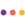

МолекулаАгрегаторы нейросетей
Молекула объединяет модели для текстов, изображений, видео и музыки. В одном аккаунте можно подобрать инструмент под этап работы, сохранить инструкции проекта и использовать готовые роли.
К задаче в МолекулеОрфография и грамматика: Сравните исправления на абзаце с терминами и вашим стилем. Принятие всех правок сразу может изменить смысл.
Передайте текст и укажите, насколько глубокой должна быть редактура. В Молекуле удобно отдельно проверить орфографию и ясность формулировок; профессиональные термины оставьте под контролем автора.
Исправь ошибки в этом письме, сохранив факты и рабочие термины. Покажи существенные изменения отдельным списком. Спорные формулировки предложи на согласование, не меняй смысл условий.

Молекула объединяет модели для текстов, изображений, видео и музыки. В одном аккаунте можно подобрать инструмент под этап работы, сохранить инструкции проекта и использовать готовые роли.
К задаче в Молекуле«FixMeBot» перерабатывает формулировки написанного текста. «FixMeBot» также помогает перенести содержание на другой язык.
«LanguagePro» помогает исправлять ошибки письменной речи.
«AI Essay Checker» проверяет признаки происхождения или заимствования текста. Дополнительно «AI Essay Checker» помогает исправлять ошибки письменной речи.
AI Resume Checker анализирует резюме и предлагает индивидуальные рекомендации по его доработке. Предусмотрена работа с английским текстом и PDF, а уведомления могут приходить на электронную почту. Инструмент также помогает создавать резюме под конкретный запрос, связывая проверку имеющегося документа с подготовкой изменённого варианта.

ProWritingAid относится к инструментам, которые помогают превращать материалы в рабочие заметки. Ещё одно направление работы: сокращать материал до основных положений.

Wordvice AI предоставляет средства корректуры и переформулирования текста, а также его краткого изложения и перевода. Редактор работает с академическими материалами в ходе написания. Пользователь может рассматривать языковые изменения вместе с содержанием своего документа, выбирая нужную операцию обработки письменного материала.
AiText - AI Writing Assistant помогает исправлять орфографию и грамматику при вводе через клавиатуру в приложениях устройства. Инструмент ориентирован на работу с текстом непосредственно в процессе набора. На одном сообщении проверьте сохранение имён, терминов и смысла фразы, затем отдельно выясните доступные языки и условия доступа к введённому материалу.
«Write Brain» помогает исправлять ошибки письменной речи.
Wordtune предлагает варианты формулировок и тон для английского текста, помогает с корректурой и сокращением материала. Его удобно сравнивать на письме с известными условиями: важно сохранить степень обещания, сроки и связь предложений после редакторской правки.
«Corrector App» проверяет языковые ошибки в тексте.
«Inkey» проверяет признаки происхождения или заимствования текста. «Inkey» перерабатывает формулировки написанного текста.
«Kwirk» перерабатывает формулировки написанного текста.

Paperpal используют для задачи: подготавливать письма и сценарии переписки. Ещё одно направление работы: редактировать уже написанный материал.

Grammarly помогает редактировать готовый текст: предлагает языковые исправления, переработку абзацев и изменение тона. Для рабочего письма полезно заранее отметить сведения, которые должны остаться точными, и принимать правки после сравнения с исходником.
«ZeroGPT Plus» проверяет признаки происхождения или заимствования текста.
Сравнивать «BulkCorrector» с другими инструментами раздела «Орфография и грамматика» удобнее на одинаковом исходном материале.
«editGPT» представлен в разделе «Орфография и грамматика». При выборе проверьте нужную операцию и условия работы с результатом.
Originality.ai рассчитан на задачи, где нужно сокращать материал до основных положений. Ещё одно направление работы: проверять ошибки в тексте.
«Quetext» проверяет признаки происхождения или заимствования текста.

QuillBot объединяет инструменты переработки текста, корректуры, сокращения и перевода. Для редактирования начните с одного абзаца и отметьте факты, которые нельзя менять: новая формулировка должна сохранить условия, а не только отличаться словами.
«Writefull» перерабатывает формулировки написанного текста.
«AI Plagiarism Checker» проверяет признаки происхождения или заимствования текста.
«imgProof» помогает исправлять ошибки письменной речи.
Jetpack предоставляет ИИ-средства подготовки контента через плагин WordPress. Среди функций есть настройка тона и проверка грамматики, а также создание заголовков и кратких изложений. Перевод дополняет работу с текстом, позволяя пользователю рассматривать оформление и язык будущей публикации на своём сайте.
Spellbound помогает редактировать письменные материалы средствами ИИ. В инструменте есть проверка орфографии и грамматики, а также подбор соответствующего тона. Работа на разных платформах дополняет эти функции, позволяя рассматривать правки формулировок и языковое оформление текста в выбранной пользователем среде.
Для «WebCopilot» сначала определите свою задачу и требуемый результат. Карточка относится к направлению «Переписать текст».
ChatOn объединяет разговорного ИИ-помощника и инструменты письменной работы в приложении. Среди операций есть создание изображения по тексту и проверка грамматики, а также синтез речи. Пользователь выбирает эти средства для общения и подготовки материалов, сочетая языковые задачи с визуальной и голосовой формой.

Handwrittner оформляет печатный материал под рукописный текст. При подготовке страницы важны размещение строк, различимость символов и соответствие задаче оформления.

Trinka проверяет грамматику и предлагает языковые изменения для академических и технических материалов. Инструмент также даёт рекомендации по написанию и проверяет заимствования. Пользователь рассматривает правки своего текста вместе с замечаниями, которые относятся к его формулировкам и письменному оформлению.
«TypingMind» помогает исправлять ошибки письменной речи.
Checkget редактирует текст с помощью ИИ, включая сокращённое изложение, перевод и исправление грамматики. Отдельная функция касается изменения тона подачи. Обращение к инструменту предусмотрено через сайт или средства для Chrome и Edge, поэтому операции с текстом могут входить в обычный браузерный рабочий процесс.
Для «Deepl Write» сначала определите свою задачу и требуемый результат. Карточка относится к направлению «SEO-инструменты».
Страница 1 из 1
Перед корректурой обозначьте жанр текста и границы изменений. В письме клиенту можно упростить фразу; в цитате или утверждённом названии документа замена слов может быть недопустима. Просьба «исправь всё» не объясняет, какие части нужно оставить дословно.
Передайте короткий текст и отдельно перечислите неизменяемые данные: стоимость, дату, номер заказа и название товара. Попросите показать исправления вместе с пояснениями. Такой формат позволяет увидеть, где исправлена опечатка, а где редактор предложил другой смысл.
Особенно внимательно проверяйте отрицания и условия. Фразы «оплата не позднее пятницы» и «оплата после пятницы» могут отличаться всего несколькими словами, но описывают разные обязательства. Подобные места не следует принимать без сверки с исходным заданием.
Опечатка, согласование и оформление прямой речи отличаются от рекомендации сделать предложение короче. Сохраните необходимую профессиональную терминологию. Если предлагается заменить термин знакомым словом, убедитесь, что значение остаётся точным для вашей аудитории.
После правок прочитайте материал целиком. Список отдельных изменений может не показать повторов или потерянной связи между абзацами. Для глубокой переработки выделено переписывание текста; для смены языка — перевод. Если текст уже сокращён, проверьте сохранность важных оговорок в разделе суммаризации.